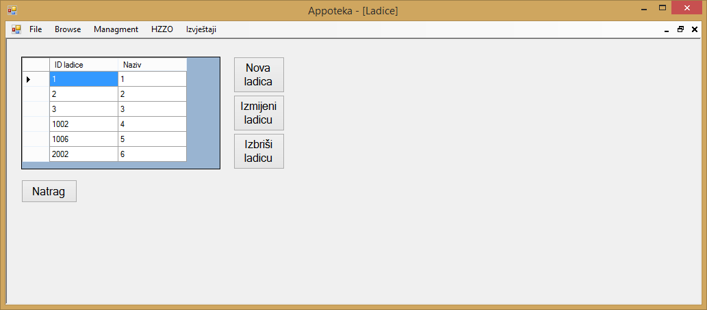
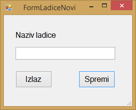
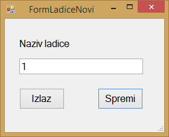

Klikom na gumb "Managment" u glavnom meniju otvara se izbor od četiri stavke, to su "Zaposlenici", "Dobavljači", "Kategorije lijekova" i "Ladice". Klikom na gumb "Ladice" otvara se prozor u kojemu se nalazi popis svih ladica koje su trenutno unesene u aplikaciju te su prikazani svi relevantni podaci o tim istim ladicama.

Ako korisnik aplikacije želi dodati novu ladicu u aplikaciju, to može napraviti klikom na gumb "Nova ladica" pri čemu se otvara novi prozor u kojemu je potrebno unijeti sve podatke o novoj ladici.

Nakon što su uneseni podaci o ladici klikom na gumb "Spremi" korisnik aplikacije može spremiti novu ladicu, a aplikacija će pritom prikazati poruku da je nova ladica uspješno dodana. Klkom na gumb "Izlaz" postupak dodavanja nove ladice se poništava.
Ako korisnik želi izmijeniti podatke o određenoj ladici, to može učiniti na način da odabere željenu ladicu te klikne na gumb "Izmijeni" nakon čega će se otvoriti prozor u kojemu će biti prikazani podaci o toj ladici.

Kada je korisnik izmjenio podatke o ladici, klikom na gumb "Spremi" označena ladica se ažurira. Klikom na gumb "Izlaz" postupak ažuriranja označene ladice se poništava.
Ako korisnik želi obrisati određenu ladicu, to može učiniti na način da označi željenu ladicu i klikne na gumb "Izbriši", tada će aplikacija prikazati poruku kojom se želi potvrditi korisnikov odabir. Klikom na gumb "Yes" označena ladica će biti obrisana, dok će klikom na gumb "No" postupak brisanja ladice biti prekinut.

Klikom na gumb "Natrag" aplikacija korisnika vraća na početni zaslon aplikacije.